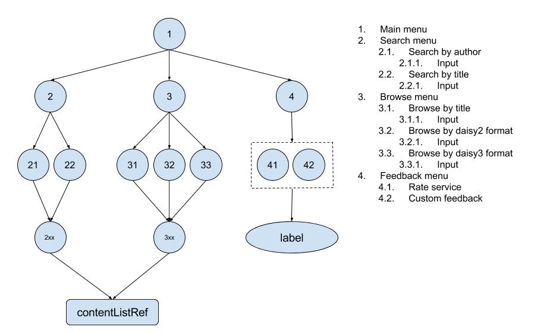

This is a demo service hosted by Kolibre and free to use for testing and demonstration purposes.
The service is pre-configured with 10 user accounts. Five accounts each with three sample contents populated in contents lists and five accounts with empty content lists that can be populated through the dynamic menus. See lists below for usernames and passwords
User accounts with populated content lists:
User accounts with empty content lists:
The dynamic menus provided with this service can be used to explore the demo library, consisting of only three sample contents, and add contents to a user's own content list. It's also possible to provide feedback but we don't not store nor evaluate the feedback. It's only for pure demonstration of dynamic menus. Below is an illustration of the dynamic menu structure.
The service is also pre-configured to reset itself to its default state every day at 0:00 CET